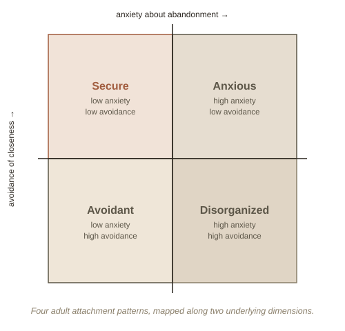

Chapter 1: The Strange Situation
Picture a one-year-old in a room with their parent and a bunch of toys. A stranger walks in. The parent quietly leaves the room. Then, a few minutes later, the parent comes back. Psychologist Mary Ainsworth ran exactly this scenario, called the Strange Situation, on dozens of toddlers in the 1970s — and what she noticed wasn't really about the toys or the stranger. It was about the reunion: how each child responded the moment their parent walked back in. Those reactions turned out to sort into a small number of consistent patterns, and those same patterns keep showing up, in modified form, in how adults handle closeness their entire lives.
Three patterns, then a fourth
Most toddlers, when reunited with their parent, sought comfort, were soothed by it, and went back to playing within a few minutes. Ainsworth called this secure attachment — the child treats the parent as what researchers call a secure base (a reliable person to return to, which paradoxically makes it easier to go explore independently). A smaller group showed the opposite: they were clingy and distressed even before the separation, and when the parent returned, they'd seek contact but angrily resist being soothed by it — anxious attachment. A third group barely reacted to the separation or the reunion at all, appearing calm on the outside — but their heart rate and stress hormones, measured separately, told a different story: they'd learned to suppress the visible signal rather than actually feeling calm. This is avoidant attachment. A fourth, messier pattern identified later — disorganized attachment — showed up in children who simultaneously approached and flinched from the returning parent, without a consistent strategy at all, often linked to caregivers who were themselves a source of both comfort and fear.

Why a toddler experiment ended up mattering for adult relationships
The theory's originator, British psychiatrist John Bowlby, argued these patterns aren't really about toys and strangers at all — they're the child's early, working "model" of a question that never stops mattering: is this person going to be there for me when I need them? That working model doesn't stay locked in childhood. Later researchers, extending Ainsworth and Bowlby's work, found the same rough categories — secure, anxious, avoidant — describe adult romantic relationships startlingly well. An anxiously attached adult tends to crave closeness but stays alert for signs of rejection, sometimes provoking the very distance they fear. An avoidantly attached adult tends to prize independence and can feel smothered by a partner's need for closeness, pulling back exactly when things get emotionally intense. Neither pattern is a character flaw — both are coherent strategies that made sense given someone's early, repeated experience of whether reaching out for comfort actually worked.
Attachment style isn't a life sentence
The most clinically important finding isn't the categories themselves — it's that attachment style is a pattern, not a fixed trait stamped in at age one. It's shaped by repeated experience, which means it can be reshaped by repeated experience too. Researchers use the term earned security for adults who grew up with insecure patterns but developed a secure style later — usually through a stable relationship (romantic, therapeutic, or otherwise) that consistently behaved the opposite of what their old model predicted, enough times that the model itself gradually updated.
Try this
Ideas for noticing or testing this in your own life.
- Notice your own reflex in your closest relationship: when you feel distant from someone, do you tend to reach out more (anxious-leaning) or want space (avoidant-leaning)? Neither is a flaw — just useful self-knowledge.
- Try questioning a triggered reaction: next time a small thing (a slow text reply, a canceled plan) hits you harder than the event itself seems to justify, ask whether it fits the actual situation, or whether it's an older "model" reacting.
Worth pulling on?
A few loose threads from this chapter — if any of these genuinely grab you, that's a good sign of where to go next.
- The "Strange Situation" only takes about 20 minutes, yet it's one of the most replicated experiments in developmental psychology — the same basic pattern split has been found across dozens of countries and cultures, though the exact proportions vary.
- Attachment style can differ by relationship — someone can be relatively secure with a best friend but anxious with romantic partners, which suggests the "model" isn't one single fixed setting so much as a set of expectations that can be partly relationship-specific. → Ties into Trauma and the Body — disorganized attachment specifically is closely studied alongside how early relational trauma gets stored physically.
- Bowlby's original ideas were considered radical and were dismissed for years by a psychiatric establishment that leaned heavily Freudian — he was one of the first to argue, with real observational data, that the bond between infant and caregiver is a primary biological need in its own right, not just a byproduct of feeding.